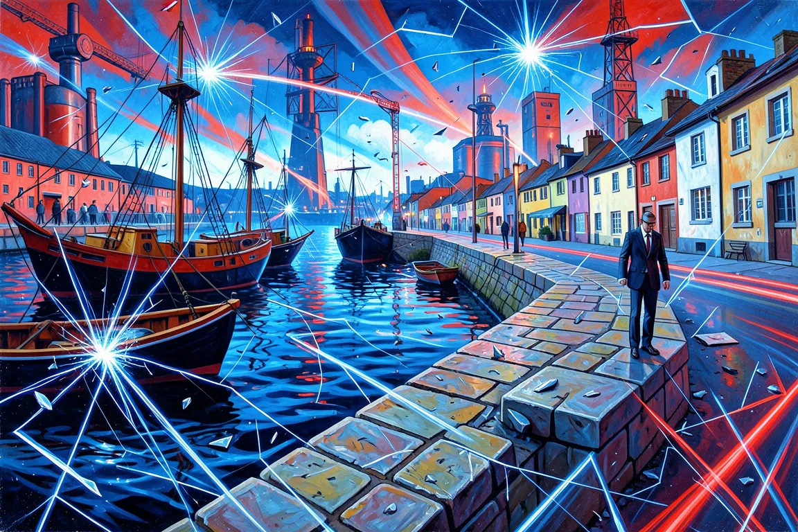

Bilder av fart, støy og maskinbyen. Formene gjentas og brytes i kraftlinjer, slik at en hund, et tog eller en folkemengde later til å bevege seg gjennom bildet.

Kjerneidé
Det moderne livet er fart og energi, så et bilde bør vise selve bevegelsen: formen kuttes og gjentas i tid og smelter sammen med omgivelsene.
Designprinsipper
Gjenta den bevegelige formen 5 til 20 ganger langs banen, med et trinn på 3 til 10 % av bredden.
Tegn kraftlinjer: lange diagonaler og buer som løper gjennom formen og ut til kanten.
Bryt objektet i skår og la skårene krysse bakgrunnen, slik at ingen kant holder kroppen.
Velg motivet fra den moderne verden: et tog, en bil, en gate, en fabrikk, en folkemengde, et lys.
Bruk en lys, delt farge, med et hardt komplementærpar i skårene, og hold toneleiet høyt.
Gi hver form en hard, fasettlignende kant på 2 til 6 mm og la fargen løpe mellom formene.
Smelt figur og rom sammen slik at gaten kommer inn i hodet og hodet kommer inn i gaten.